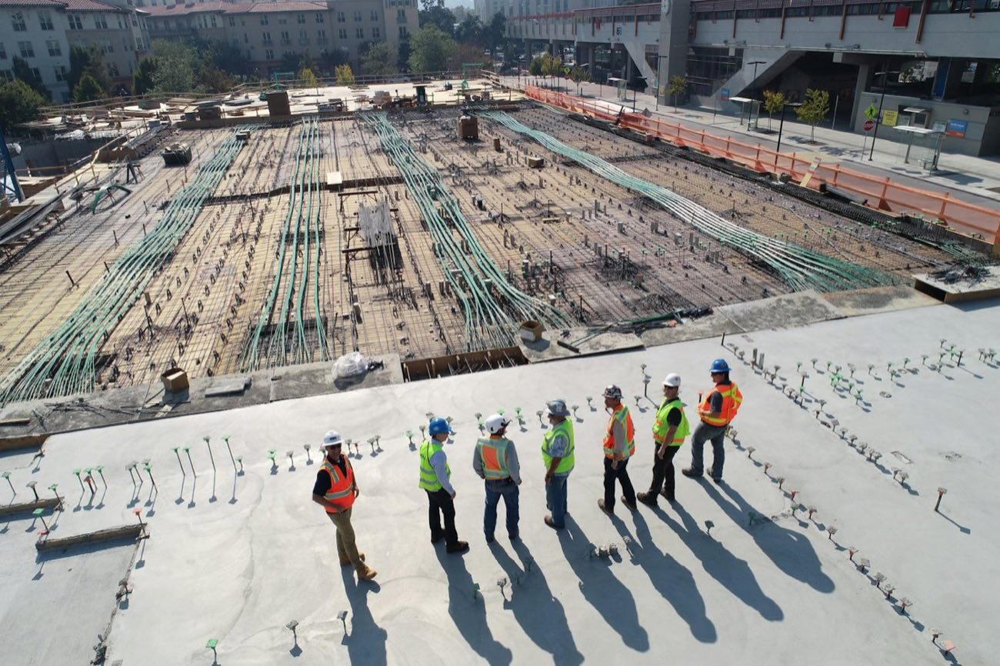
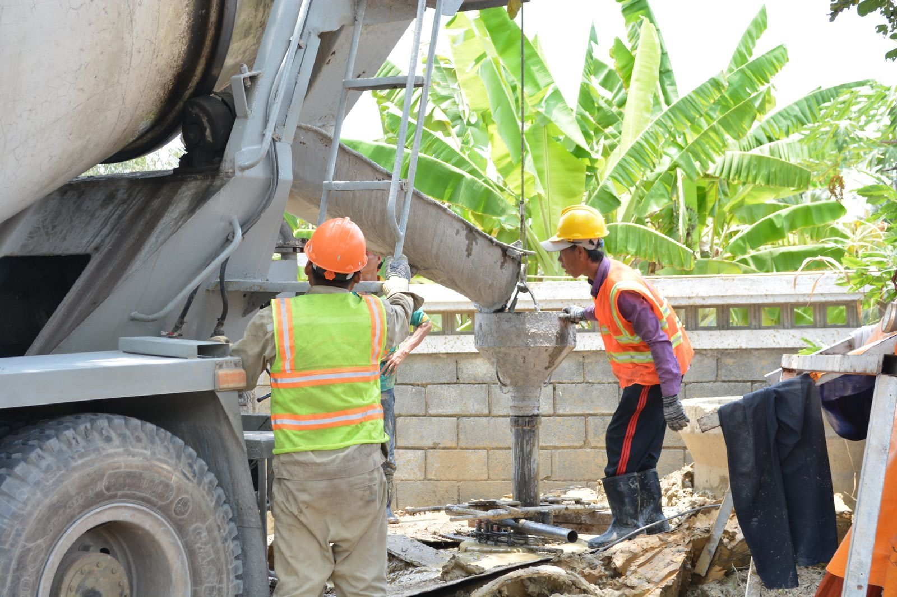

Concrete Industry Management · Chico State
Building the Future of the Concrete Industry, Together
Chico State’s Concrete Industry Management program connects education and industry to prepare the next generation of leaders—from the classroom to the boardroom.
For nearly two decades, Chico State CIM and concrete industry professionals have worked together to create opportunities for students to learn, connect, and prepare for meaningful careers throughout the industry.

- Program founded
- Since 2007One of only five CIM programs in the country
- Job placement
- 100%Job placement for CIM graduates
- Starting salary
- $80KAverage starting salary out of the program
- Industry partners
- 50+Industry partners behind the program
About CIM
Where Concrete Meets Business
Concrete Industry Management at Chico State is an industry-driven degree designed to prepare students for the business of concrete.
Students develop knowledge in concrete materials, production, and applications while building the business, management, and leadership skills they can carry into the workplace.
Hands-on learning, internships, industry connections, and exposure to working professionals help students connect what they learn in the classroom with the realities of the industry.
From Classroom to Boardroom
The goal goes beyond understanding concrete. CIM prepares students with a broad skill set for the technical, logistical, managerial, and administrative sides of the industry—and for opportunities to lead its future.
The Patron Program
Built With Industry. Strengthened by Partnership.
Since Chico State joined the national CIM program in 2007, industry professionals have played an important role in supporting the program and its students.
The Chico State CIM Patrons Program brings together concrete producers, suppliers, contractors, association leaders, consultants, alumni, and other professionals who share an investment in developing the industry’s future workforce.
More Than Financial Support
Patron involvement helps connect students with the people, knowledge, and experiences that bring their education to life.

Across CIM, Patron support can include:
- Scholarships and program funding
- Internships and professional networking
- Mentorship
- Guest lecturers and industry speakers
- Field visits and hands-on experiences
- Equipment and in-kind resources
- Student and program recruitment support
It is a relationship that benefits both sides: students gain greater access to the industry they are preparing to enter, while industry professionals have an opportunity to participate in developing its next generation.
Why Support CIM
Invest in Students. Strengthen an Industry.
When industry and education work together, students gain opportunities that extend far beyond the classroom.
Support for Chico State CIM helps connect students with resources, experiences, mentors, and professionals throughout the concrete industry.
These relationships give students opportunities to apply their education, build professional connections, and better understand the many paths available to them.
For industry partners, supporting CIM is an opportunity to contribute directly to the education and development of emerging professionals—and to the continued strength of the industry itself.
Scholarship Feature
The Steve Gonzales Scholarship Fund
$1,000,000
A $1 Million Investment in the Next Generation
The Steve Gonzales Scholarship Fund represents a $1 million investment in students and the future of the concrete industry.
Through this support, students can continue learning, developing their skills, and preparing to lead in an industry that helps shape the world around us.
The impact reaches beyond an individual student or classroom. Supporting students pursuing Concrete Industry Management helps strengthen the next generation of professionals who will bring their knowledge, leadership, and experience to the industry for years to come.
Supporting students today. Building the industry’s future.
Leadership
Meet Our Chico State CIM Board
Industry Experience. Shared Commitment.
Chico State CIM is strengthened by industry professionals who contribute their time, experience, and perspective in support of the program and its students.
Our board represents an important connection between education and industry—helping CIM remain connected to the people, organizations, and opportunities shaping the concrete industry.
-
[First Name Last Name]
[Board Title]
[Company / Organization]
-
[First Name Last Name]
[Board Title]
[Company / Organization]
-
[First Name Last Name]
[Board Title]
[Company / Organization]
-
[First Name Last Name]
[Board Title]
[Company / Organization]
-
[First Name Last Name]
[Board Title]
[Company / Organization]
Board names, titles and photographs to be supplied by the program.
Support the Program
Help Build What Comes Next
The strength of Chico State CIM comes from the people who believe in its students, its mission, and the future of the concrete industry.
Through financial support, mentorship, industry involvement, and partnership, you can help create opportunities for students while contributing your knowledge and experience to the next generation of concrete industry professionals.
From the classroom to the boardroom, we’re building the future of the industry together.